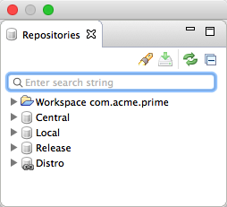
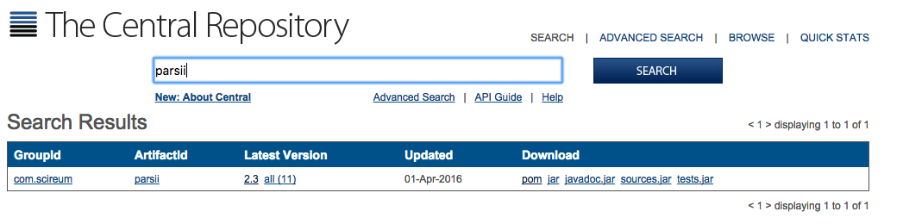
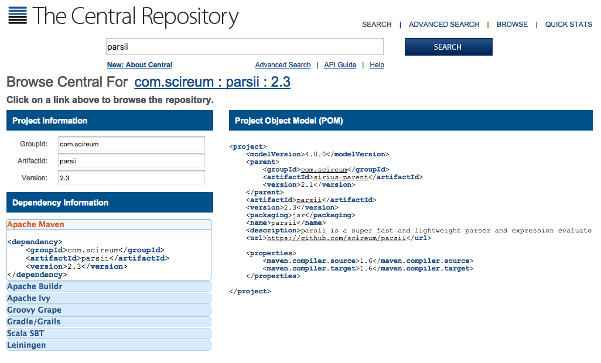
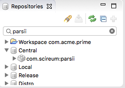
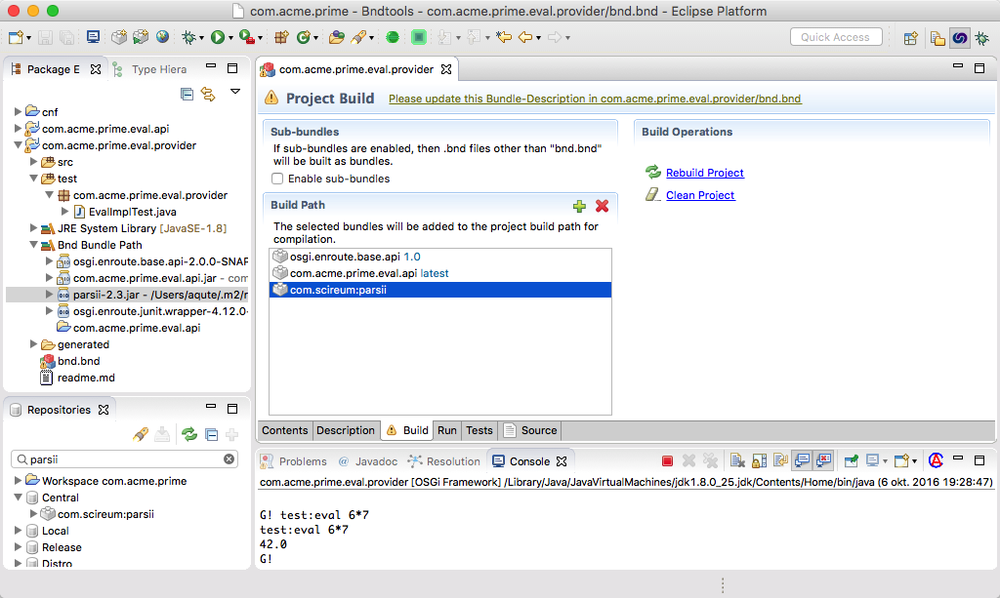
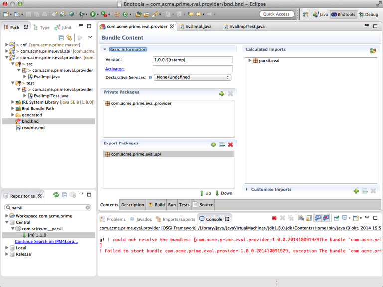
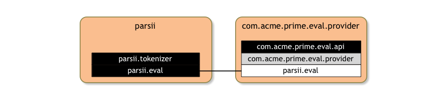
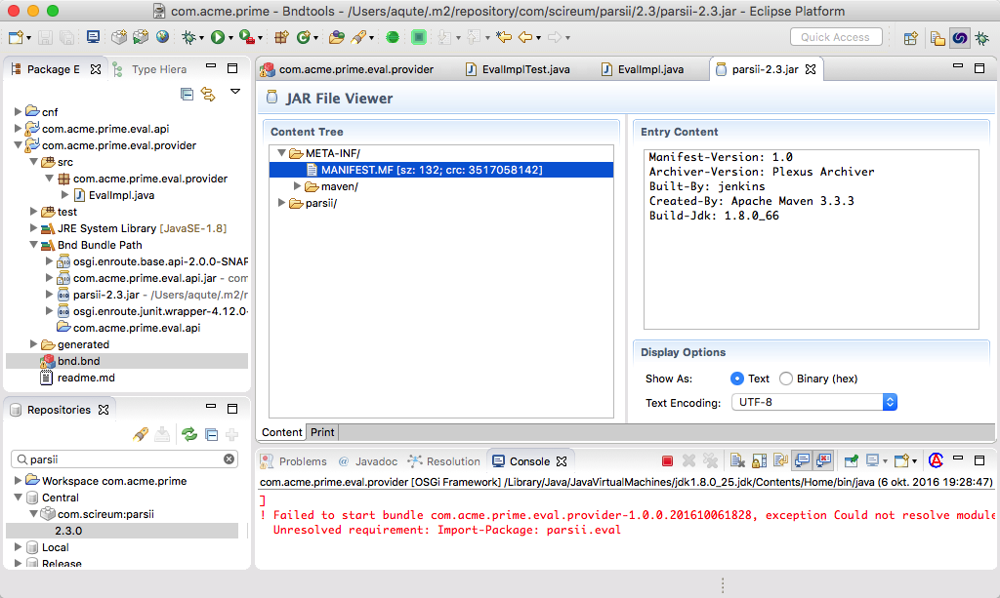
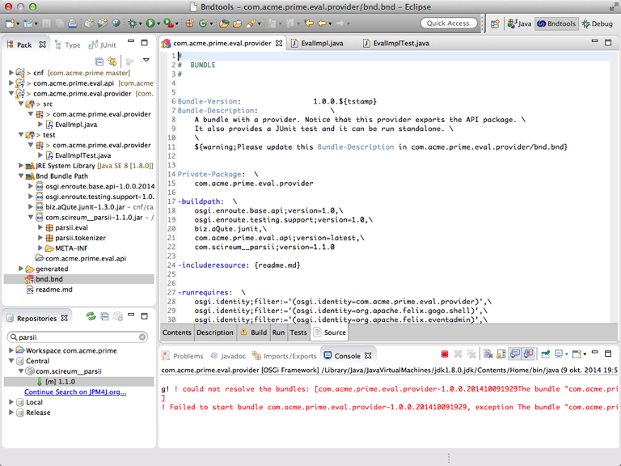

Dependencies
What You Will Learn in This Section
In this section we look into how we can depend on other projects inside and outside our workspace. We introduce the build path and the repositories that come with your workspace.
External Dependency
There is a lot of code that we’re proud of but the EvalImpl class is not really
one of them. To preserve our pride we could of course spent a couple of weeks and
come with a new evaluator but why invent the wheel when large groups have already
done that already untold times and make it amazingly gratis available for you?
However, that raises the question how to get this external dependency in in our build? Well, we should first search in our local repositories. At the left bottom of your Eclipse window there are is a list of repositories:

Now there is a simple parser on Maven central that is quite nice for our purpose: PARSII
and has an MIT License. Would it not be nice if we could easily add this to our build
path? So why not search for PARSII in the repositories view.
This comes up empty. What do we do? Well, we can search on search.maven.org

If we click on the version, we get the following window

We should now copy to the clip-board the Apache Maven dependency XML element.
<dependency>
<groupId>com.scireum</groupId>
<artifactId>parsii</artifactId>
<version>2.3</version>
</dependency>
If look in the cnf folder then we see a file called central.xml. Double click on this
file and add the element coped to the clip board into the dependencies element.
<project xmlns="http://maven.apache.org/POM/4.0.0" xmlns:xsi="http://www.w3.org/2001/XMLSchema-instance"
xsi:schemaLocation="http://maven.apache.org/POM/4.0.0 http://maven.apache.org/xsd/maven-4.0.0.xsd">
<modelVersion>4.0.0</modelVersion>
<groupId>local</groupId>
<artifactId>central</artifactId>
<version>0.0.0</version>
<packaging>pom</packaging>
<dependencies>
<dependency>
<groupId>com.scireum</groupId>
<artifactId>parsii</artifactId>
<version>2.3</version>
</dependency>
</dependencies>
</project>
Unfortunately the refresh has a bug. To see the dependency, you must for now
make small change to the build.bnd file in cnf project. This will kick
the repository to properly refresh itself.
The repositories view is now updated and should look like:

Adding to Build Path
We should first open the bnd.bnd file in the com.acme.prime.eval.provider
project and open the Build tab.

You can now drag the com.scireum:parsii entry and drop it on the build path, the
list with osgi.enroute.base.api. After you save the bnd.bnd file then the
Eclipse class path is automatically updated.

Updating the EvalImpl class
Since now have the PARSII library on our build path, we can use it in our EvalImpl class.
This small library significantly simplifies our code:
@Component(
name = "com.acme.prime.eval.simple",
property = {
Debug.COMMAND_SCOPE + "=test",
Debug.COMMAND_FUNCTION + "=eval"
}
)
public class EvalImpl implements Eval {
@Override
public double eval(String expression) throws Exception {
return Parser.parse(expression).evaluate();
}
}
When we save this class we suddenly get an error from the Eclipse console, s omething like: ‘could not resolve …’. The big grey window that is yelling at you might be a bit annoying at first but we often went on a wild goose chase because we did not see the error in the console.
In retrospect we could have expected this error since we created an external dependency in our source which was satisfied by the build path but we did not add anything to the runtime.
Packaging
Back to the black art of packaging. Let’s see how our bundle is shaping up:
click on bnd.bnd and then select the Contents tab. It is clear that this
bundle cannot resolve because it imports the parsii.eval package; a package
for which the runtime has no providing bundle.

The bundle therefore looks like:

We now have 2 options. We can add the PARSII bundle to the runtime or we can add the imported packages to our own bundle. What is best? In this case the answer is quite easy since the PARSII is actually not a bundle; it is only a simple JAR. You can verify this easily. Select the PARSII bundle in the respositories view under the Central repository (search for parsii). If you double click on the JAR it opens the JAR Viewer, and the manifest is shown.

This rather meager manifest is not an OSGi manifest, ergo, this is not a bundle. So option 2, adding the packages to the JAR is the best solution.
Go back to the Contents tab of the provider bundle. If you now drag the
parsii.eval package from the Imported Packages list to the Private
Packages list and save the bnd.bnd file then you see that a new import
replaces the the parsii.eval package: parsii.tokenizer. You can now also
drag this package to the Private Packages list but lets learn something new.
Adding these packages by hand can become tedious. So select the Source tab of the bnd.bnd editor:

What you now see is the underlying bnd.bnd properties file; in bnd everything is a property! We can now replace the clause in the Private-Package header and use wildcards like parsii.*:
Private-Package: \
com.acme.prime.eval.provider,\
parsii.*
If you now save the bnd.bnd file and select the Contents tab you see that the imports have disappeared. Our provider bundle now looks like:
Copying packages into your bundle from the class path often creates surprise, disgust and vomiting for the more traditional developers. For now you have to believe us that we do know why we break this taboo. it actually works quite well.
Playing
Since there are now no longer any errors, we can now use our Gogo shell command to test out our efforts. We’re now no longer restricted by a single operation so can go wild and find answers to all the (mathematical) questions we always wanted to know but were afraid to ask:
g! test:eval pi
3.141592653589793
g! test:eval sin(pi)
1.2246467991473532E-16
g! test:eval sin(1)*sin(1)+cos(1)*cos(1)
1.0
There is a small chance that you did something different and that the you do not get the prompt. In that case, terminate the running process, goto the Run tab on the bnd.bnd file, and click Run OSGi again. If this does not resolve the issue, try the next step since this will add some debugging.
Otherwise, you can try the Forum (TODO: Mailingliste) and look for a good (technically educated) Samaritan to help you out.
How Does it Work?
The basic dependency model of bnd is based on the OSGi Bundle Symbolic Name (BSN). The Build Path, the Run Bundle and a number of other paths and bundles all specify their dependency on an OGSi bundle by declaring a BSN and an version range. These specifications are translated into actual JARs on the file system through repositories. A repository takes a request for a BSN and provides bnd with the versions available for that BSN, and can turn an actual BSN and version into a file. Repositories are plugins, that is they are not an intrinsic part of bnd. It is actually quite easy to write a repository that links to some external repository. The repositories that are loaded are visible in the repositories view in the left bottom.
In the enRoute project we have the following repositories:
- Workspace – The workspace repository represents all the bundles in the workspace built by projects. You can add such bundles as a dependency to your project.
- Release – This is the repository where our final bundles are released in, you can find the storage of this repo in ./cnf/release
- Central (Maven) – This is a view on the Maven Central repository through a POM. You can find this file in
./cnf/central.xml.
We then added the packages from PARSII to our own bundle because the PARSII JAR was not a bundle. We could have
turned it into a bundle, but copying the classes in your own bundle is ok as long as they are copied to the
Private Package area. Private classes are never exposed to the outside and can not conflict with other bundles.
It is important that you make sure none of the objects is in the public API in one of the exported packages.
That is, if the Eval interface had a reference to for example the parsii.eval.Parsers class then we could not a
dd the packages from PARSII to our own bundle; it could cause really nasty OSGi errors. In general, bnd will notify
you when that happens. In this case we’re ok since the PARSII JAR is fully encapsulated in our bundle.